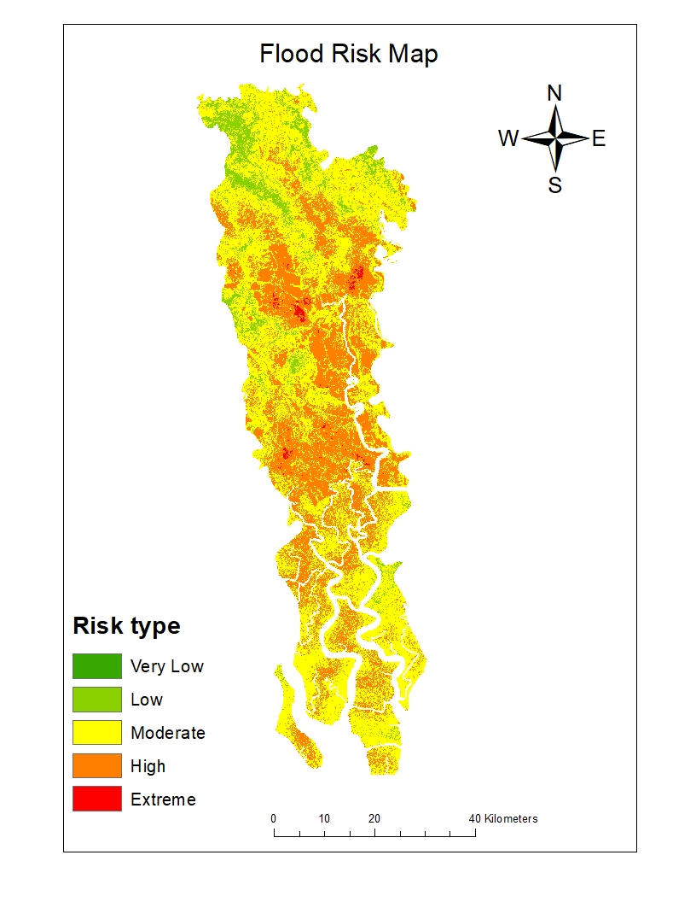
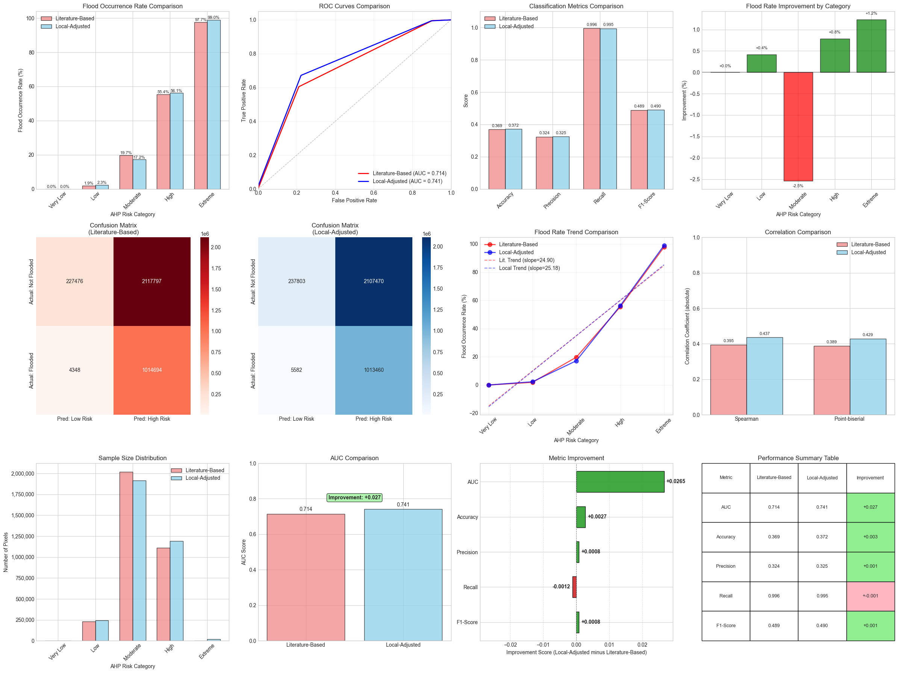

[Manuscript in Preparation]
Seasonal ENSO Signals, Annual Flood Peaks, and Changing Stage–Discharge Relations in the Ganges and Brahmaputra Rivers of Bangladesh
Mohammad Najmus Sakib, Rounak Afroz
Department of Water Resources Engineering, Bangladesh University of Engineering and Technology (BUET), Dhaka 1000, Bangladesh
Key points: Studies the Ganges at Hardinge Bridge and the Brahmaputra at Bahadurabad. The known seasonal link between ENSO and Ganges flow still holds when extended to 2022. However, the same ENSO signal does not predict the largest flood of the year. Gauges themselves changed over time: Hardinge Bridge shifts around 2006 with falling water level at same flow, Bahadurabad rises then falls around 2012, while rainfall shows no such change. A strong seasonal link does not mean a strong yearly-peak link.
[Revision Submitted]
FLOOD SUSCEPTIBILITY ASSESSMENT IN THE SATKHIRA DISTRICT OF BANGLADESH THROUGH MULTI-CRITERION ANALYSIS WITH AHP AND REMOTE SENSING
This study maps flood risk in Satkhira District using GIS with the Analytical Hierarchy Process (AHP). Ten factors were used: elevation, slope, drainage density, distance from rivers, distance from roads, rainfall, land use/land cover, soil type, NDVI, and TWI.
Key points: Most of the district is at moderate (57.1%) or high (35.1%) risk, with 0.5% extreme, 7.3% low, and less than 0.1% very low. In total, 92.7% falls in the moderate-to-extreme range. Validation against the 2015 flood gives AUC 0.806, better than the literature-based weighting (AUC 0.782). The model finds almost all flooded areas (recall 99.47%) but is deliberately cautious, with lower precision (32.40%) and accuracy (36.98%), which suits precautionary planning. Results point to needs for embankment management, controlled land use, and flood-resilient infrastructure.
Revision submitted to Discover Geoscience


[Poster Competition]
Spatial Assessment of Irrigation-Induced Water Stress in Northwest Bangladesh
Collaborated with Maesha Mashiyat to map over-irrigation zones across Northwest Bangladesh using unsupervised clustering techniques and GIS-based spatial analysis. The study identifies areas of excessive groundwater extraction for irrigation, offering a spatially explicit picture of water stress that can inform sustainable agricultural water management in the region.